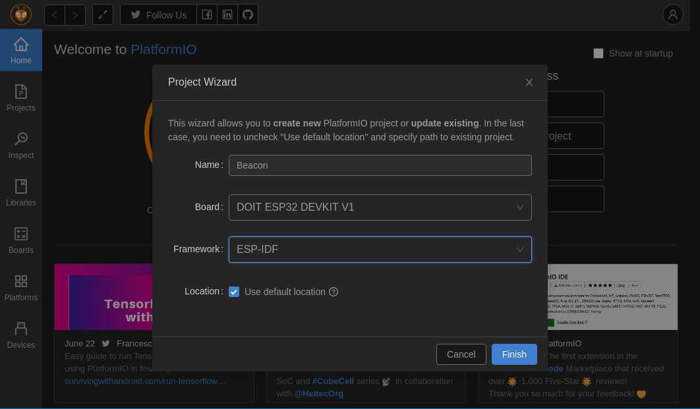

Muitos modelos de beacons estão disponíveis no mercado, entre os mais conhecidos está o IBeacon. Infelizmente, não haviam IBeacons no laboratório, mas por sorte haviam muitos ESP32s. Eles possuem a mesma tecnologia utilizada pelos IBeacon, o Bluetooth Low Energy (BLE). O ESP32 pode ser programados utilizando a IDE do Arduino, mas a biblioteca não oferecia suporte ao que eu pretendia fazer. Foi necessário utilizar diretamente as APIs do ESP32, o que acabou gerando essa postagem.
Para fazer a programação do ESP32 eu utilizei o PlatformIO, que é uma plataforma que oferece suporte a programação de diversos dispositivos. Essa plataforma oferece suporte direto as APIs do ESP32 o que facilitou meu trabalho. Esse acesso direto a API tem o nome de ESP-IDF que signifca Espressif IoT Development Framework, que é mantido pela fabricante do próprio ESP32 a Espressif. A criação do projeto deve seguir da seguinte forma:
